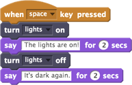
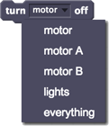
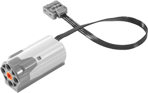
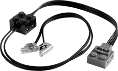

Acenda as luzes por 2 segundos quando a tecla de espaço for pressionada, e depois apague-as.

Você pode selecionar um dispositivo compatível com o LEGO WeDo no menu suspenso:
- Se você tem apenas um motor, use a opção "motor", a qual desligará o motor, independentemente de onde ele esteja conectado no hub WeDo.
- Se você tem dois motores que deseja controlar separadamente, pode usar o "motor de A" com um e "Motor B" com a outra.
- "luzes" desligar as luzes, independentemente de onde elas estão conectadas no hub WeDo.
- "tudo" desliga todos os motores e luzes ligados.
Para usar desligar, você precisa ter motor(es) WeDo ou luzes conectados ao computador por meio de um hub LEGO WeDo.

